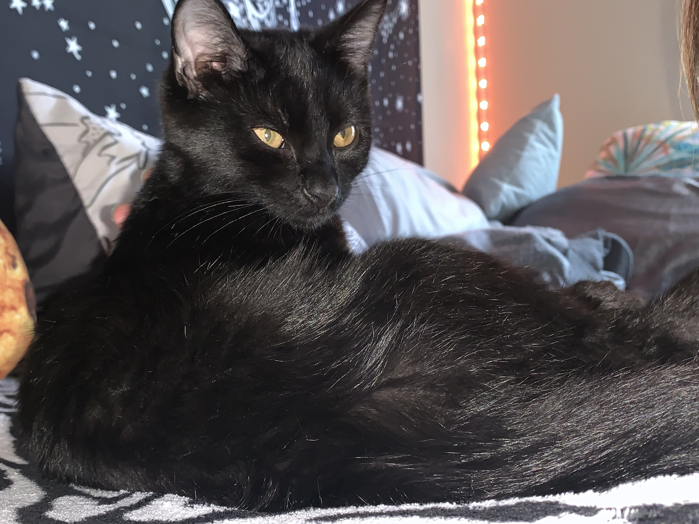

About Zeus
Zeus is 3 years old.
Zeus is a Polydactyl, which means he has extra fingers or toes.
Zeus has 6 on each paw.
Would you like to learn more about Polydactyl cats?
Here are some additonal facts aboutPolydactyl cats?